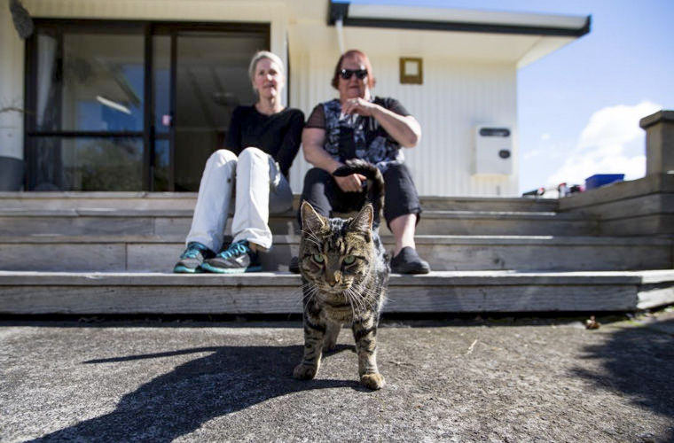

Кошка с лишней хромосомой покорила
пользователей соцсети
Кошка по имени Майя - необычная кошка. У нее 20
хромосом вместо положенных 19. Это означает, что
у кошки болезнь, аналогичная синдрому Дауна
у людей. Ее хотели усыпить в приюте, но нашлись
хозяева, которые забрали ее себе.
Майю нашли около китайского ресторана в
Бостоне. Вскоре после того, как она попала в
приют, ее начали готовить к смертельной
инъекции. Животных (в частности - больных),
которым не могут найти новый дом, в американских
приютах ожидает именно такая участь.
Судьба Майи круто повернулась, когда ее
заметили сотрудники
благотворительной организации The Odd Cat
Sanctuary (с англ. - Обитель Странных Котов). Они забрали
кошку себе и опубликовали ее фотографию в
Фейсбуке. Так они попытались найти ей новых
хозяев. В итоге отозвалось столько людей, что
сотрудникам фонда пришлось около шести недель
потратить на интервью, чтобы выбрать хозяина
получше.
Теперь Майя - звезда Instagram. Ее забрали Харрисон и
Лорен, пара, которая завела аккаунт
специально для своей кошки и выкладывает
туда ее фотографии. На них Майя окружена лаской и
заботой, лежит и урчит - в общем,
наслаждается жизнью.
Кошки помогают бороться с терроризмом: в
Твиттере устроили флешмоб после трагедии в
Барселоне
Twitter заполнен сообщениями о терракте,
иллюстрациями к которым служат
фотографии котов и кошек. Так пользователи
Twitter пытаются помешать террористам
отслеживать информацию о работе полиции.
Жители Барселоны включились во флешмоб в
социальной сети. Сейчас Twitter заполнен
сообщениями о терракте, в которых
граждане выражают соболезнования
жертвам трагедии в Барселоне.
Записи сопровождаются хэштегами
#Barcelona, #FuerzaBarcelona и #Rambla. А иллюстрациями
служат фотографии котов и кошек.
Котики против терроризма

Дело в том, что таким образом пользователи
Twitter пытаются помешать террористам
отслеживать информацию о работе
полиции. Правоохранительные органы
обратились к жителям и гостям Барселоны с
просьбой не публиковать фотографии с места
трагедии. Информация о перемещениях
полиции может быть на руку злоумышленникам. Ведь
террористические организации
сегодня активно пользуются
социальными сетями. Фотографии котов и
кошек "засоряют" ленту Twitter и, тем самым,
усложняют работу преступников. Кроме того,
жители Барселоны таким образом
поддерживают друг друга. Ведь коты способны
немного снять напряжение и успокоить
встревоженных после терракта людей.
Такой же флешмоб был стихийно организован и
после напомним, 17 августа в Барселоне
произошел теракт. Фургон въехал в толпу людей, в
результате погибло 13 человек, ещё больше
десятка пострадавших находятся в
больнице в тяжелом состоянии.
В Новой Зеландии разоблачили кота,
который жил на две семьи
Кошки часто ведут себя так, будто им безразличен
человек, с которым они вынуждены
существовать в одном пространстве. Иногда
бывают исключения: питомец
действительно любит хозяина. Но
случаются и крайности, когда кошка вдруг
решает жить «на две семьи».
Такой случай произошел в Новой Зеландии с котом
Симбой. Его хозяйка Ширли Бишом замечала, что
питомец периодически пропадает на
несколько дней, но успокаивала себя — котику
нужно немного воли, одиночества и
беспредела.
Однажды Симба пропал на неделю, а вернулся со
швами рядом с шеей и выбритым плечом. Тогда Бишоп
поняла: ее двухлетний кот живет двойной жизнью!
Я отправилась к ветеринару, чтобы он
подсказал, что могло случиться с Симбой. Однако
из-за закона о неприкосновенности частной
жизни мне отказались сообщить имя человека,
который ухаживал за моим котом. Все, что они могли мне
сообщить, — это название улицы, где находится
второй дом Симбы
— рассказала Бишоп.
"Второй мамой" оказалась Майкела Грумбридж,
к которой чужой кот пришел девять месяцев назад.
Он весело проводил время в доме второй
хозяйки, был очень активным и радостным. В связи с
этим Грумбридж даже назвала котика Crazy Horse
(буквально — «Шальная лошадка»), «потому что он
носился по дому как сумасшедший».
Когда Симба — Шальная лошадка внезапно исчез на
неделю, произошел неприятный инцидент.
Кота покусала собака, и «вторая мама»
немедленно отнесла раненого питомца к
ветеринару. Секрет Симбы раскрыли.
Однако самое примечательное в этой истории,
что Бишоп и Грумбридж даже были знакомы — они
работали в одном офисе, но на разных этажах.
Делить кота не пришлось. Женщины
договорились, что будут ухаживать за Симбой по
очереди.
Самый длинный кот в мире живёт в Австралии
Стефи Хёрст из австралийского Мельбурна
совершенно не ожидала, что из помёта мейн-кунов,
появившихся на свет в 2013 году, она выберет
самого необычного котёнка.
Хёрст и её партнёр Роуэн Лоуренс взяли маленького
рыжего питомца в возрасте 12 недель. Ныне
четырёхлетний кот Омар раскидывается на 120
сантиметров в длину. Число его фанатов в
соцсетях растёт день ото дня, и эксперты "Книги
рекордов Гиннесса" обратились к молодой
хозяйке с просьбой выслать им параметры
животного.
На данный момент официальным рекордсменом
считается 118-сантиметровый мейн-кун из
Уэйкфилда в английском Йоркшире. Хёрст завела
профиль кота в "Инстаграме" всего две
недели назад, но на него уже подписались более 15
тысяч человек.
Самое прославленное фото Омара получило
более 270 тыс. лайков в аккаунте Cats of Instagram за
неделю. С момента его размещения рыжий кот с
белой грудкой стал всё чаще мелькать в австралийской
прессе и на ТВ.
18 лет назад родилась Тама – первая в мире
кошка-станционный смотритель
29 апреля исполняется 18 лет со дня рождения
знаменитой японской кошки Тамы – первой в мире
кошки-станционного смотрителя,
занимавшей официальную должность в
железнодорожной компании и в буквальном
смысле спасшей ее от банкротства.
Кошки, занимающие официальные должности
– не такая уж большая редкость. Многим знакомы кот
Ларри – официальный мышелов, состоящий на
службе в особняке премьер-министра
Великобритании, «библиотечный кот» Дьюи из
Айовы, «эрмитажные коты», охраняющие
музей от грызунов, и так далее, но японская кошка
Тама – это особый случай.
Все началось с того, что частная
железнодорожная компания «Вакаяма
Дэнтэцу Кисигавасэн» стала терпеть
серьезные убытки и была вынуждена
существенно сократить штат своих
сотрудников. Дела у нее шли настолько плохо, что
обязанности станционных смотрителей за
умеренную плату неофициально выполняли
жители населенных пунктов,
расположенных рядом с железной дорогой.
Такая судьба постигла и станцию Киси – за ней
присматривала местная жительница Тосико
Кояма, которая также заботилась о
бездомных кошках. Одной из этих кошек оказалась
Тама.
Тама привлекла в экономику города
Кинокава инвестиции на сумму,
превышающую 1 миллион иен. Google отметил день
рождения Тамы праздничным дудлом Карьерный рост
На должности станционного смотрителя
Тама оставалась недолго – в 2008 году ее
повысили до начальника станции, причем в
торжественной церемонии назначения
приняли участие мэр города и президент
железнодорожной компании. Для кошки был
организован специальный офис – под эти цели
переделали билетную кассу станции. А в
2010 году Тама получила новую должность и стала
исполнительным директором компании. Ее
стилизованные изображения украсили
станцию Киси и поезд «Тамадэн».
Водка помогла лондонским ветеринарам
спасти кошку, которая отравилась тормозной
жидкостью. Об этом сообщает UPI.
Семилетняя домашняя кошка по кличке
Принцесса случайно вымазалась в разлитой
тормозной жидкости. Животное стало
вылизывать шерсть, и ядовитое вещество
попало в организм. Хозяйка нашла свою
питомицу в тяжелом состоянии.
Когда кошку доставили в ветеринарную
больницу, врачи немедленно послали в
ближайший магазин за крепкой водкой, а затем
сделали животному алкогольную
капельницу. Этиловый спирт нейтрализовал
содержащийся в тормозной жидкости
этиленгликоль. Через несколько дней кошка пошла
на поправку, и ее вернули домой.
«Ветеринары объяснили, что происходит —
лечение было необычно, но я просто хотела,
чтобы Принцесса выжила, — говорит хозяйка
кошки. — Теперь буду следить, чтобы с ней такого
больше никогда не стряслось».
В 2014 году сообщалось об аналогичном случае в
британском Северном Йоркшире, где водочная
капельница спасла кошку, которую
хулиганы облили антифризом.